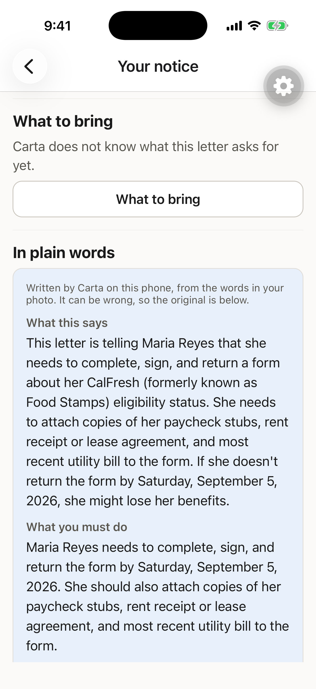
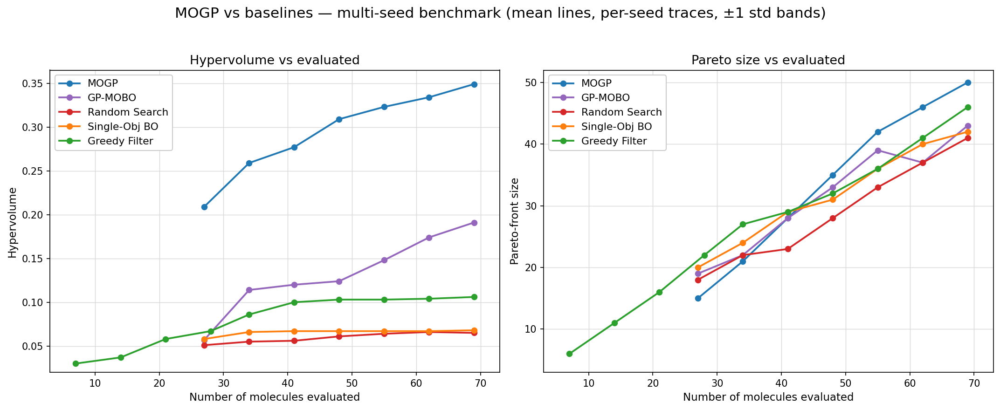

I'm a junior at Los Altos High School in Los Altos, CA. I tend to notice when something is not working, and I keep going until I understand why. That is roughly how CivicPulse started.
I kept walking past cracked sidewalks and broken streetlights around my neighborhood that nobody seemed to fix. It turned out there was no simple way for residents to flag those problems to the city, so I built one.
Right now I am a research intern at Paper Lantern, working with a team led by former Google DeepMind executives on how frontier AI models get evaluated. I spend my time mapping the landscape of benchmarks, arenas, and RL environments, figuring out what each one actually measures and why a handful of them became standards while most were built and then forgotten.
Outside of software, I mentor about 60 students a year in Math Kangaroo prep, compete on the VEX and FRC robotics teams, debate parliamentary for the speech and debate team, and run the STEM Research Club I started at LAHS. I make a podcast about chip design, and I have 200+ volunteer hours across the library, FCSN, and STEM outreach.
Projects
Research Intern, Paper Lantern
Working with a team led by former Google DeepMind executives. Aug 2026, ongoing.
Frontier models have effectively consumed the open internet as training data, and yet they still fall short on the tasks worth the most in our economy, the ones that need deep expertise, long term thinking, or taste. Closing that gap takes human judgement and verifiable outcomes, which is why benchmarks, arenas, and RL environments have grown into a multi billion dollar industry of their own. My work is a survey of that landscape. I am cataloguing which evaluation efforts exist, what model capability each one actually tests, how it collects human or verifiable judgements, and how it found an audience, including the ten or so that were built and never caught on. I map them along dimensions like domain, task complexity, and accessibility, meaning whether only a well funded lab can evaluate on it or whether an ordinary person can contribute. The point of the survey is to find a capability that is measurably weak, prove it with data rather than assert it, and then build the evaluation and training data that would improve it.
Benchmarks, arenas, RL environments, evaluation design, literature review
Receiving a Certificate of Appreciation for CivicPulse from the Rotary Club of Mountain View.
CivicPulse is a platform where Los Altos residents can report local infrastructure problems, upvote what matters most to them, and track whether anything gets resolved. Residents drop a pin, attach a photo, and submit a report in under a minute. The app has a live map of all active reports, community upvoting so the most urgent issues surface first, push notifications, and an admin dashboard for city staff. It was covered by the Los Altos Town Crier in April 2026 and is in active use with LAMVCF and the Rotary Club. The iOS app is live on the App Store.
Every notice becomes a countdown, colored by how little time is left.

The on-device model's rewrite, labeled as machine written with the original letter kept below.
During the 2023-24 Medicaid unwinding, more than 25 million people lost coverage, and among states reporting a reason, KFF's tracker counts 69% of those disenrollments as procedural, meaning paperwork rather than a finding of ineligibility. They were already enrolled, so I am building Carta for retention rather than enrollment. A recipient photographs the renewal letter, a CalFresh SAR 7 or a Medi-Cal redetermination, and the app reads it on the phone, finds the deadline buried inside, and schedules reminders against it. Nothing on that path touches the network, enforced by a test that disables fetch, XMLHttpRequest, WebSocket, and the native bridge, verifies the sabotage really throws, then replays 79 recorded scans and fails on any attempt. A deterministic extraction cascade reaches 96.4% precision on core fields and 100% on every date the app schedules against, measured across 23 photographs shot in nine physical conditions rather than on clean synthetic text. An optional on-device Qwen2.5-1.5B model rewrites a notice in plain language at 1.3 seconds to first token and 37 tokens per second on an iPhone, held to a hand-written GBNF grammar, and it withholds any explanation citing a date the user has not confirmed. It runs in English and Spanish, though that rewrite still answers Spanish letters in English and is unfinished. Getting a model onto the phone at all meant a 4-bit quantization of Qwen2.5-1.5B down to about 1.1 GB, shipped as an optional download rather than bundled into the app, plus the iOS entitlements that let a process hold that much in memory. The grammar is the third design rather than the first. Constraining the shape of a date let through 00/00/0001, and a grammar with no production meaning "not stated" left the sampler no legal way to abstain, so on a notice with no deadline the model confidently emitted the notice date instead.
React Native, Expo, TypeScript, Apple Vision OCR, llama.rn, Qwen2.5-1.5B, Jest, iOS
Multi-Output Gaussian Process Surrogate Model for NTD Drug Discovery
Co-authored with Caleb Suh. Science fair project, in progress.

Hypervolume and Pareto-front size against molecules evaluated, MOGP compared with four baselines.
Drug discovery for neglected tropical diseases is underfunded and computationally expensive. Screening a billion compounds on a single processor core would take 475 years. Caleb and I are building a surrogate modeling pipeline that uses a Multi-Output Gaussian Process trained on molecular fingerprints to predict ADMET properties, meaning Absorption, Distribution, Metabolism, Excretion, and Toxicity, from a molecule's SMILES string alone. Rather than collapsing drug-likeness into a single score, the model treats human safety, absorption, and synthesizability as conflicting objectives on a Pareto front, and uses Expected Hypervolume Improvement to choose the next molecule to evaluate. The goal is to let underfunded NTD researchers skip expensive wet lab screening and go straight to a ranked list of promising candidates. We are validating the approach by simulating rediscovery of a known drug at a fraction of the documented cost and time.
You cannot fabricate a chip in a garage, so I explain chip design out loud instead. Both episodes run about ten minutes. The first is on Cortical Labs' CL1 chip and the roughly 200,000 living human neurons grown on silicon and trained by reinforcement learning to play Doom. The second is on photonic chips replacing copper interconnect, the bottleneck in AI data centers, working through Lightmatter's Passage chiplet, Ayar Labs' TeraPHY, and Q.ANT's NPU 2. Each episode is built from the primary sources, the DishBrain paper for the first and the vendors' own published hardware for the second, rather than from other people's summaries.
I run workshops at LAHS for students who want to do research and have no idea what the first step is. The barrier is not interest, it is that nobody teaches you how to identify what you want to study, how to read an academic paper, or what a cold email to a professor should say. The workshops cover exactly that, plus literature review and resume preparation, and more than 100 people have come through them. We also bring in guest speakers, so far all of them working in AI, including venture capital partners and people at large tech companies, each walking through the path they took. The eventual goal is to connect members with professors and research programs at nearby community colleges and state universities.
Workshops, guest lectures, paper reading, cold outreach, literature review, resume preparation
Past papers tell a student the score, not which skill failed. I run a Math Kangaroo prep program for about 60 students a year. We fix the problem a student missed, and the misconception underneath it survives to the next paper. Kangaroo Atlas is what I built instead. Every one of the 600 wrong answer choices stores the specific misconception that produces it, a rule the build enforces, so a score becomes a diagnosis rather than a number. Behind it sits a prerequisite graph over 91 named skills in 7 strands joined by 106 edges, so a miss on the adaptive diagnostic walks down to the skill underneath. I wrote all 150 problems myself, so no official Math Kangaroo question is ever reproduced, and each one carries a three step hint ladder and, where it needs one, a hand-drawn figure from a set of 25. Timed 75 minute mocks, per skill ladders, and printable worksheets whose answer key carries those explanations all run signed out, with no ads or trackers. It builds to 869 static pages behind 2,138 tests and 102 accessibility assertions, every one of them build-blocking. The goal is a free version of my program that another tutor can self host.
iOS app live on the App Store. Android submitted for review.
Active collaborations with LAMVCF and the Rotary Club.
Building Carta, an on-device iPhone app that reads government benefits letters so a renewal deadline is never missed.
Speech and Debate
Parliamentary debater and state qualifier, ranked in the top 100 teams in the country.
PR and social chair. Plans and advertises events across multiple schools, reaching 200+ students a year, and works on funding and the record of past results.
Community
Founded and runs the STEM Research Club at LAHS. 100+ students through its research workshops.
200+ volunteer hours across the library, FCSN, and STEM outreach.
100 of those at the Los Altos Library, organizing and pulling books and running the sorting machine.
JV tennis league champions as team captain.
Contact
Feel free to reach out about anything, whether it is CivicPulse, AI evaluation, the science fair project, math, or robotics.